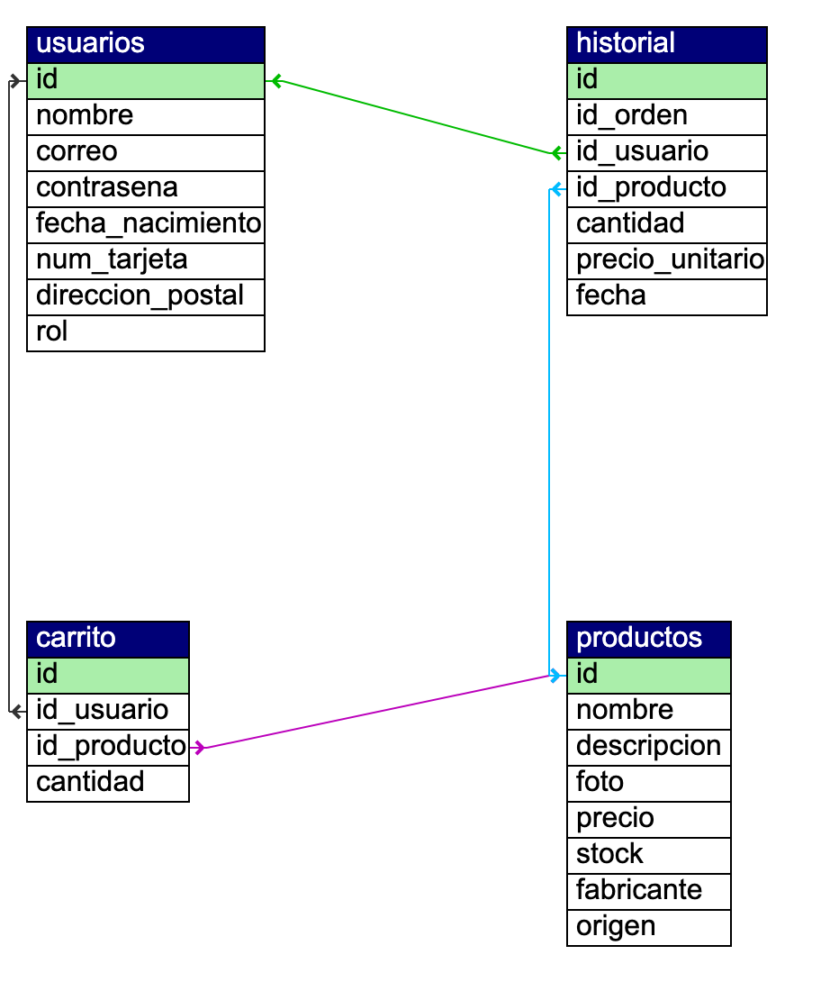
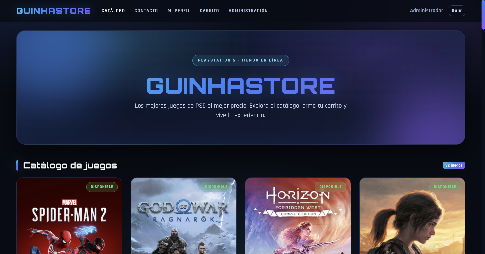
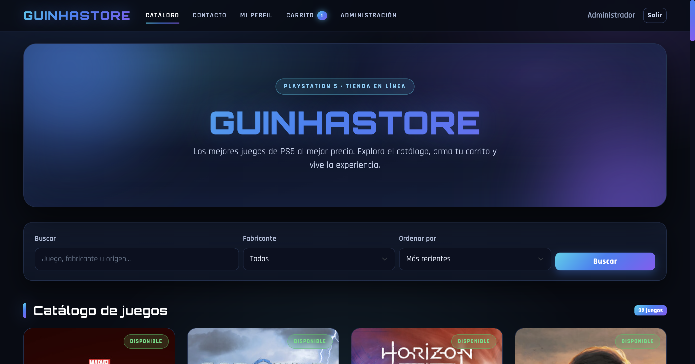
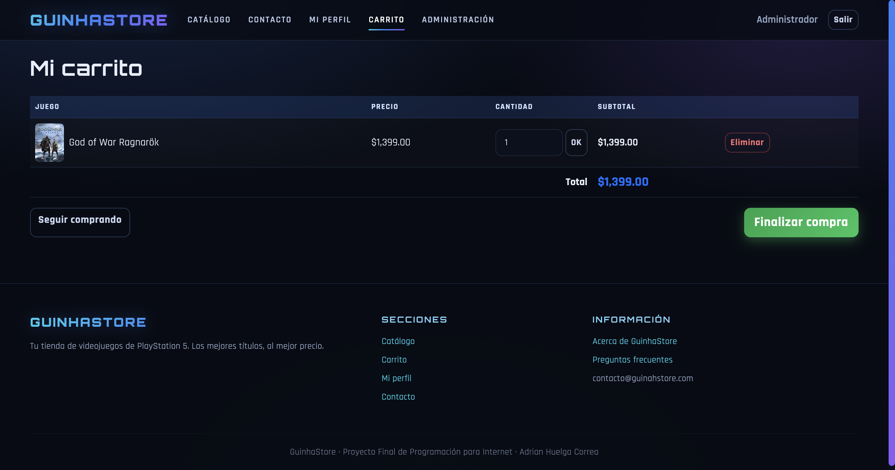
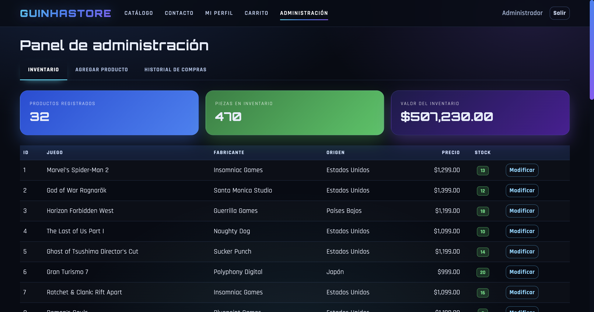
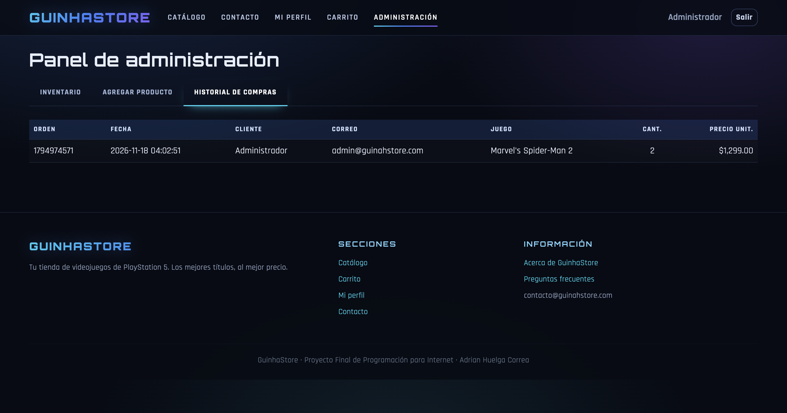
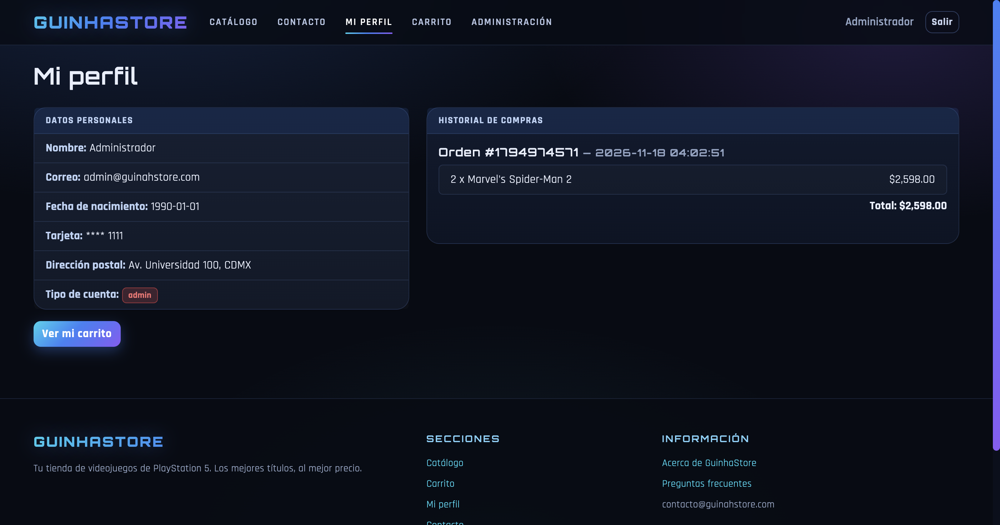
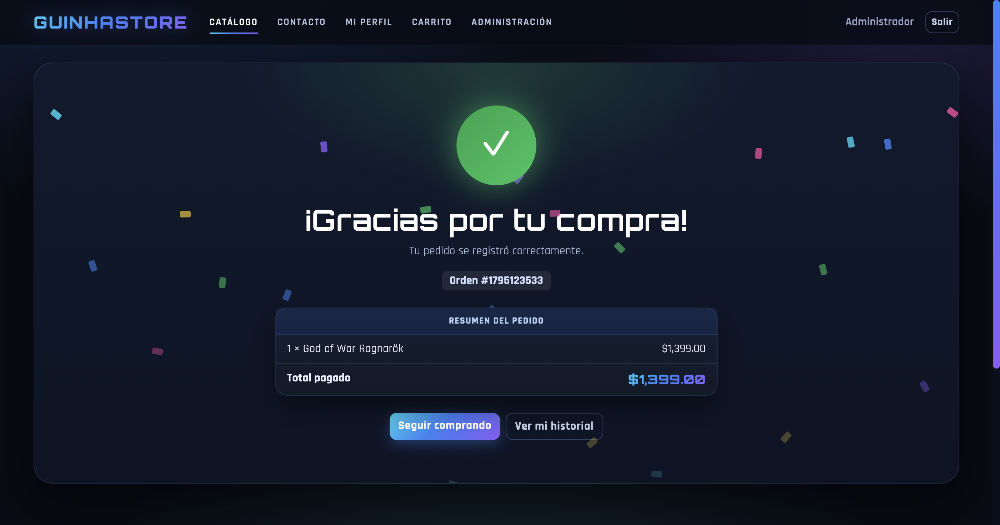

Proyecto Final
Programación para Internet (SIS3410)
Alumno: Adrian Huelga Correa
Universidad Anáhuac México Norte
GuinhaStore es una tienda en línea dedicada a la venta de videojuegos de PlayStation 5. El sistema permite a los visitantes explorar un catálogo de 32 juegos, crear una cuenta, iniciar sesión, armar un carrito de compras y finalizar la compra. Además, cuenta con una página de administración desde la cual se puede consultar el inventario, agregar y modificar productos y revisar el historial de compras de los clientes.
El proyecto se desarrolló con PHP 8.2, MySQL/MariaDB y Bootstrap 5, ejecutándose completamente dentro de Docker para facilitar su instalación y ejecución.
Desarrollar una tienda en línea funcional que integre una base de datos relacional, lógica del lado del servidor con PHP y una interfaz responsiva construida con Bootstrap 5.
El siguiente diagrama Entidad-Relación fue generado con phpMyAdmin y muestra las cuatro tablas del sistema y sus relaciones:

CREATE TABLE productos (
id INT(11) NOT NULL AUTO_INCREMENT,
nombre VARCHAR(150) NOT NULL,
descripcion TEXT,
foto MEDIUMBLOB,
precio DECIMAL(10,2) NOT NULL DEFAULT 0,
stock INT(11) NOT NULL DEFAULT 0,
fabricante VARCHAR(100),
origen VARCHAR(100),
PRIMARY KEY (id)
) ENGINE=InnoDB;
CREATE TABLE usuarios (
id INT(11) NOT NULL AUTO_INCREMENT,
nombre VARCHAR(100) NOT NULL,
correo VARCHAR(150) NOT NULL,
contrasena VARCHAR(255) NOT NULL,
fecha_nacimiento DATE,
num_tarjeta VARCHAR(20),
direccion_postal VARCHAR(200),
rol ENUM('cliente', 'admin') NOT NULL DEFAULT 'cliente',
PRIMARY KEY (id),
UNIQUE KEY uq_correo (correo)
) ENGINE=InnoDB;
CREATE TABLE carrito (
id INT(11) NOT NULL AUTO_INCREMENT,
id_usuario INT(11) NOT NULL,
id_producto INT(11) NOT NULL,
cantidad INT(11) NOT NULL DEFAULT 1,
PRIMARY KEY (id),
FOREIGN KEY (id_usuario) REFERENCES usuarios(id) ON DELETE CASCADE,
FOREIGN KEY (id_producto) REFERENCES productos(id) ON DELETE CASCADE
) ENGINE=InnoDB;
CREATE TABLE historial (
id INT(11) NOT NULL AUTO_INCREMENT,
id_orden INT(11) NOT NULL,
id_usuario INT(11) NOT NULL,
id_producto INT(11) NOT NULL,
cantidad INT(11) NOT NULL DEFAULT 1,
precio_unitario DECIMAL(10,2) NOT NULL DEFAULT 0,
fecha DATETIME NOT NULL DEFAULT CURRENT_TIMESTAMP,
PRIMARY KEY (id),
FOREIGN KEY (id_usuario) REFERENCES usuarios(id) ON DELETE CASCADE,
FOREIGN KEY (id_producto) REFERENCES productos(id) ON DELETE CASCADE
) ENGINE=InnoDB;
Página principal. Muestra los 32 juegos en una cuadrícula responsiva de tarjetas con su portada, descripción, precio y disponibilidad. Cada tarjeta permite ver el detalle o agregar el juego al carrito.

El catálogo incluye un buscador por nombre, fabricante u origen, un filtro por fabricante y opciones para ordenar los juegos por nombre o por precio.

Muestra los juegos agregados, permite cambiar la cantidad o eliminar artículos y calcular el total. El botón Finalizar compra registra la venta.

Accesible solo para el usuario administrador. Presenta un reporte del inventario con indicadores (productos, piezas y valor total) y la tabla de productos con opción de modificarlos.


Muestra la información personal del usuario y su historial de compras agrupado por orden.

Al finalizar la compra el usuario llega a una pantalla de confirmación con el número de orden, el resumen del pedido y el total pagado.

El control de versiones del proyecto se realizó con Git y se encuentra publicado en GitHub:
https://github.com/adrianhc22/GuinhaStore
GuinhaStore · Proyecto Final · Adrian Huelga Correa